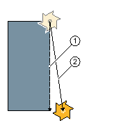
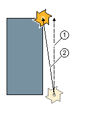

Wenn Sie eine Gerade in Polarkoordinaten programmieren möchten, nutzen Sie die Funktion "Gerade Polar".
Eine Gerade im Polarkoordinatensystem wird durch die Länge L und den Winkel α bestimmt. Der Winkel bezieht sich je nach gewählter Bearbeitungsebene auf eine andere Achse. Und auch die Richtung, in die ein positiver Winkel zeigt, hängt von der Bearbeitungsebene ab.
Bearbeitungsebene | Drehen | Stirn | Mantel |
|---|---|---|---|
Bezugsachse für Winkel | Z | X | Y |
Positiver Winkel in Richtung Achse | X | Y | Z |
Das Werkzeug fährt auf einer Geraden im Bearbeitungsvorschub oder Eilgang von der aktuellen Position zum programmierten Endpunkt.
Die 1. Gerade in Polarkoordinaten nach der Polangabe müssen Sie im Absolutmaß programmieren. Alle weiteren Geraden oder Kreisbögen können Sie auch im Inkrementalmaß angeben.
Radiuskorrektur
Wahlweise können Sie die Gerade mit Radiuskorrektur durchführen. Die Radiuskorrektur wirkt selbsthaltend (modal), d.h. Sie müssen die Radiuskorrektur wieder abwählen, wenn Sie ohne sie verfahren möchten. Allerdings dürfen Sie die Radiuskorrektur bei mehreren aufeinanderfolgenden Geraden mit Radiuskorrektur auch nur im ersten Programmsatz anwählen.
Bei der ersten Geraden mit Radiuskorrektur fährt das Werkzeug am Anfangspunkt ohne und am Endpunkt mit Radiuskorrektur. D.h. bei einer programmierten senkrechten Bahn wird eine Schräge gefahren. Erst bei der zweiten programmierten Geraden mit Radiuskorrektur wirkt die Korrektur über den ganzen Verfahrweg. Der umgekehrte Effekt tritt auf, wenn die Radiuskorrektur abgewählt wird.
|  Gerade mit angewählter Radiuskorrektur |  Gerade mit abgewählter Radiuskorrektur |
Wenn Sie einen von der programmierten Bahn abweichenden Verfahrweg vermeiden möchten, können Sie die erste Gerade mit Radiuskorrektur bzw. mit abgewählter Radiuskorrektur außerhalb des Werkstücks programmieren. Eine Programmierung ohne Koordinatenangaben ist nicht möglich.